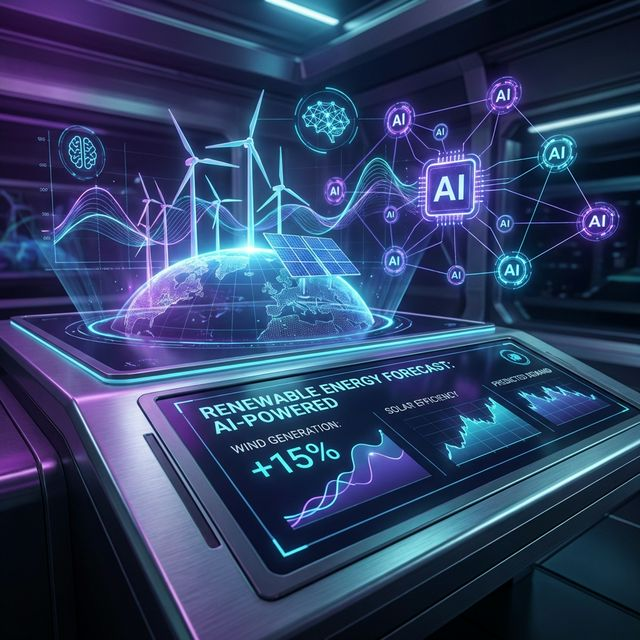

AI & data
TensorFlow, Keras, Scikit-learn, OpenCV, Pandas, NumPy, Matplotlib, NVIDIA CUDA
AI & ML engineer · Paris, France
I am Arunkumar Aluru, a graduate student and engineer focused on machine learning, deep learning, and generative AI for energy and healthcare.

01 / Profile
I am pursuing a Master's in Artificial Intelligence Systems at EPITA in Paris, following a B.Tech in Computer Science with an AI and ML specialization from Kalasalingam Academy of Research and Education.
My work connects rigorous model development with useful outcomes. I am especially interested in forecasting renewable energy, building robust neural networks, and finding responsible applications for generative AI.
02 / Toolkit
TensorFlow, Keras, Scikit-learn, OpenCV, Pandas, NumPy, Matplotlib, NVIDIA CUDA
Python, Java, C, JavaScript, HTML and CSS
React, Next.js, Node.js, NestJS, Flask, Angular, Tailwind CSS
PostgreSQL, MongoDB, MySQL, SQLite, Firebase, Google Cloud, Git
03 / Selected work

01
Forecasting solar and wind generation with LSTM and CNN models, paired with generative AI techniques to improve prediction quality.
02
A deep learning pipeline using BiLSTM and Transformer models, deployed on Azure and connected to a Power BI dashboard.
03
Explore work across NLP, computer vision, time series analysis, TensorFlow, and Scikit-learn.
04 / Publication
ICICNIC 2024
Published at the IEEE International Conference on Intelligent Computing and Next-Generation Communication. The paper explores LSTM, CNN, and generative AI techniques for forecasting renewable energy generation.
Read the paper05 / Contact
I'm open to research collaborations, AI engineering roles, and thoughtful conversations.
aluruarunkumar19@gmail.com